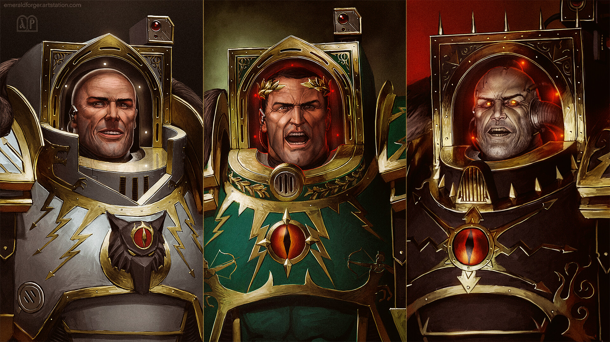
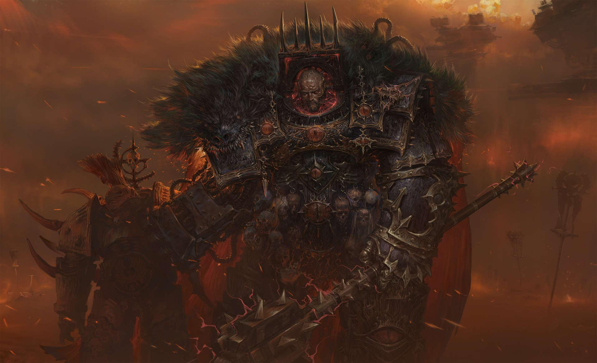
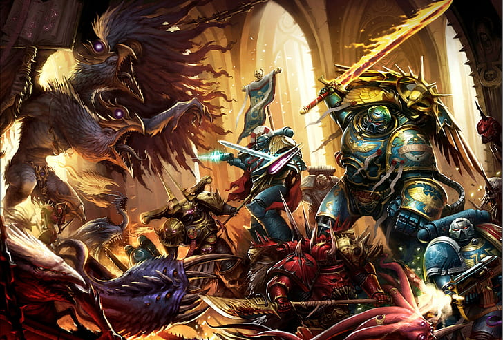
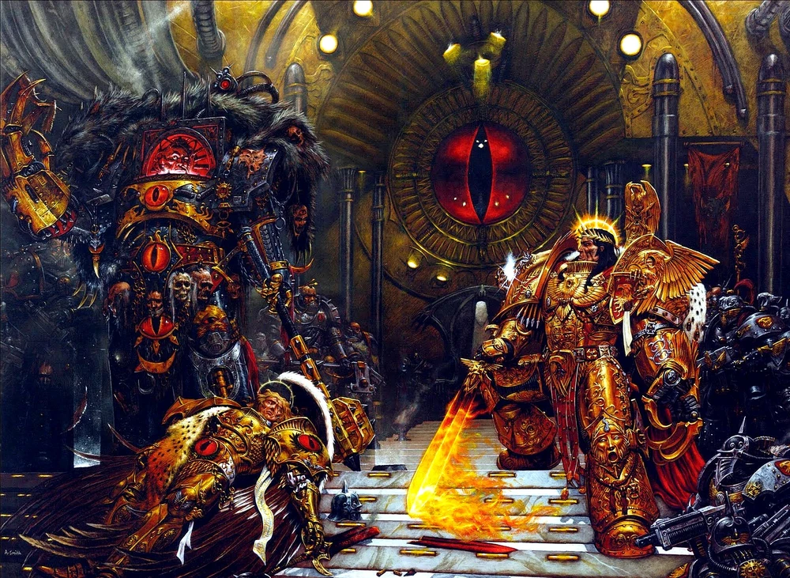

History of the Horus Heresy
The Horus Heresy marks one of the darkest and most catastrophic periods in the history of the Warhammer 40k universe. It was a galactic civil war that saw the very heart of the Imperium shattered by betrayal. At the center of this conflict was Horus Lupercal, the Emperor's most trusted and beloved son, and the Warmaster of the Great Crusade🔗, tasked with uniting the galaxy under the banner of humanity. The seeds of rebellion were sown when Horus was corrupted by the Chaos Gods during a campaign on the planet Davin. They manipulated his pride and ambition, turning him against his father, the Emperor of Mankind🔗. What followed was a brutal war as Horus, along with nine other Primarchs and their legions, fell to the lure of Chaos and declared their rebellion against the Imperium🔗.
The Betrayal of Horus
Once considered the most loyal of the Emperor's so Horus's fall from grace is regarded as the greatest betrayal in human history. Initially, the Emperor had granted him the title Warmaster, making him the supreme commander of all the Legiones Astartes🔗. However, the weight of this responsibility, coupled with the poisonous whispers of the Chaos Gods, gradually eroHorus's loyalty. His betrayal began in secret, with subtle manipulations of other Primarchs🔗 and legions.
The Battle at the Imperial Palace
The Horus Heresy reached its dramatic climax in the Siege of Terra🔗, where Horus and his forces launched a direct assault on the Imperial Palace🔗 on Earth. After weeks of relentless fighting, Horus took a bold risk. He lowered the shields of his battle barge, daring the Emperor to face him in single combat. The Emperor, alongside his loyal sons and the Custodian Guard🔗, teleported aboard Horus's flagship for a final confrontation.
The final act of the Horus Heresy came when Horus, now fully consumed by Chaos, lowered the shields of his flagship, challenging the Emperor to confront him. Sanguinius🔗, the noble Primarch of the Blood Angels🔗, was the first to face Horus. Despite his bravery and strength, he was no match for the corrupted Warmaster, who brutally killed him in a one-sided duel. When the Emperor arrived, he initially held back, hoping to save Horus. However, Horus unleashed the full power of Chaos, grievously wounding the Emperor and forcing him to accept that his once-favored son was beyond redemption.
In the final moments of the battle, the Emperor unleashed his full psychic might, obliterating Horus’s soul and ending the rebellion. Though victorious, the Emperor was left mortally wounded and was placed on the Golden Throne to preserve his life in a broken state. Sanguinius’s sacrifice and the Emperor’s decisive strike ended the Heresy, but it came at the cost of both their lives and left the Imperium forever scarred by betrayal.
Explore more about the Primarchs, the Legions, and the impact of the Heresy on the Imperium...
Visit the official Warhammer website